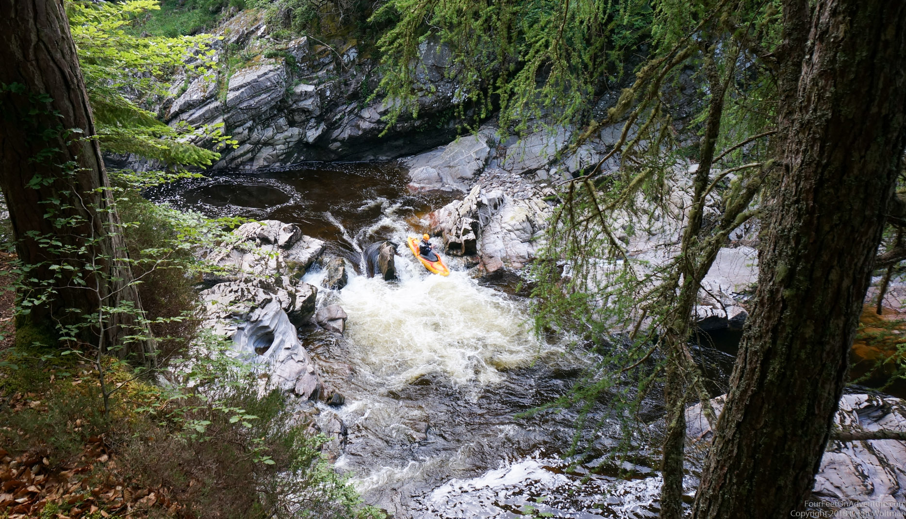
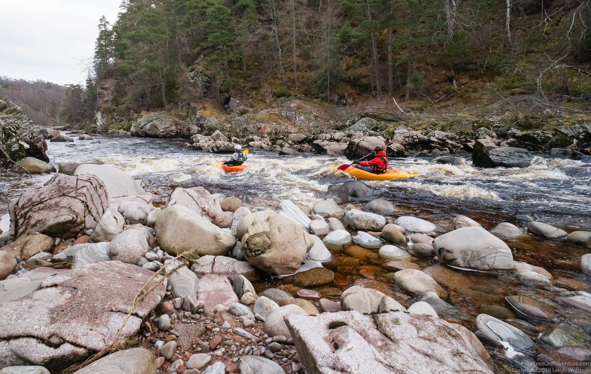
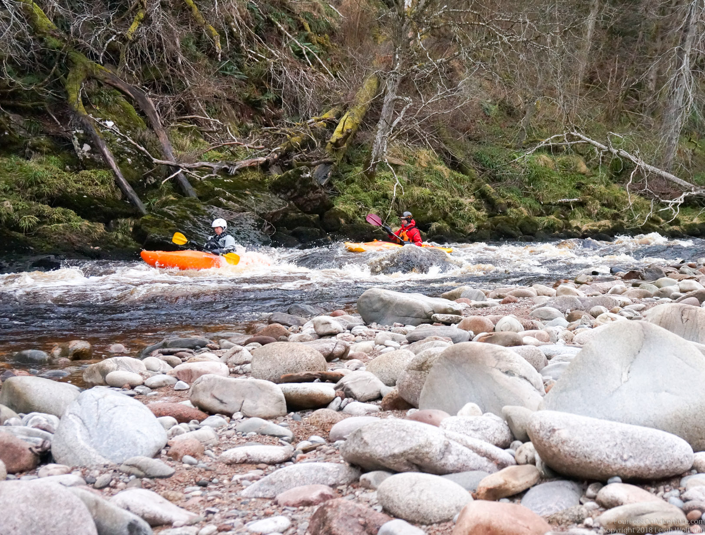
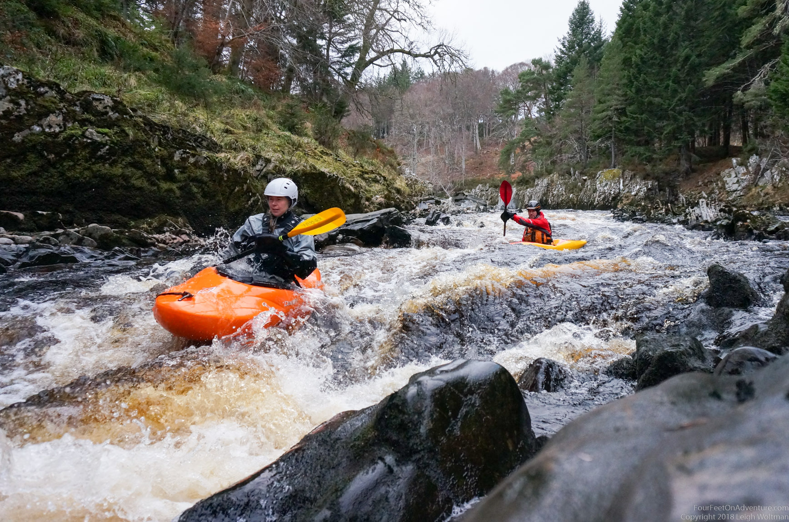
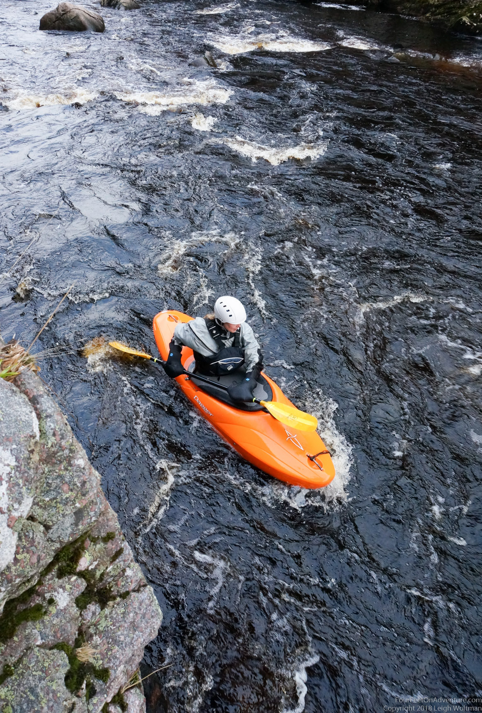
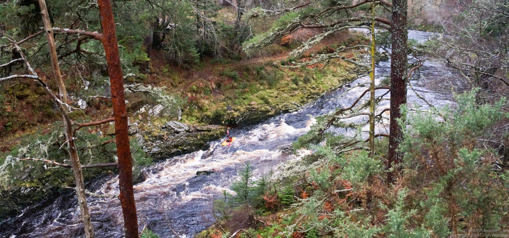

We both love kayaking, and Scotland is therefore not a bad place to be.

Not long after arriving here we started building up our fleet. Facebook and eBay were frequently checked for good deals. White water boats was the goal. Quite soon we bought a boat off a guy a guy from Edinburgh who would meet us halfway: 2 hours driving for us and in the middle of a village stood a guy with a boat on his roof, being sad about giving up paddling. He also sold us the most awful paddle in the world, one blade is pink and one blade is white. Leigh does not want to be seen anywhere near it. But it gave us something to play with for the day, as we couldn't resist putting it in a flowing river we found on the way home. Our first boat!.

Not long after I got into contact with a strange person. The conversation dragged on for about 4 months, until finally we decided to call it quits. I unfortunately wasn't persuasive enough to make her walk to the shed and take a photo of the paddle she was going to sell with it. She wanted to get into horse riding and buy a horse, or something like that. Next contact was in Glasgow. It was through eBay, and we decided to make a bid, won the boat, and had to drive over to Glasgow to pick it up. We found a super nice guy and a great boat. Orange, just in case I get homesick (Orange is the colour of the Netherlands), and a good learners boat, which suits me fine as a whitewater beginner. I've since had many other paddlers commenting on my boat, it’s a classic that many had when they were younger, it was replaced by other boats, but starts to get popular again. So many great memories, and ofcourse I’m looking forward to make some of my own. We also bought some other equipment, like a pfd and dry-suit, and happily we drove all the way home, but not without hearing about kangaroo island with real kangaroo’s. We'll have to visit it one day.

Fast forward to Christmas 2018. It was quite ok weather in Scotland, between 5 and 10 degrees every day. Because I'm still a bit nervous around white water in combination with rocks and me being in a tiny little orange boat, we decided to build confidence by repetition; which basically is a good excuse to go to do some paddling every day. It had been a hectic period, and we weren't going to do much Christmassy stuff.

We live about 30 minutes away from the Findhorn river, a very cool whitewater river. The middle section is a class 2/3 and great for learning and gaining confidence in this kind of stuff. The middle section is about 8 km long. Additional advantage is that along the entire length of that section is a path on the banks. A beautiful trail that goes up and down, and lets you look out over the river. Great for me, who got to run to shuttle the car to the end. I would leave Leigh with some music or his laptop if he had to do some work, at the top with the kayaks, drive the car down to the take out, and run the river back up. Not only did I really enjoy that, it would give me the opportunity to see how the rapids were that day.

You'd think that after a couple of runs you know how they are, but the fun thing with white water kayaking is that at every level of water the rapids are different. Sometimes they become harder if the level goes down, because the angles of the water become steeper as they are not spitting out so aggressively and practically horizontal. When water levels are really high and the water goes through it like crazy, it all becomes quite intimidating, and there are fewer spots where the water is calm and you can take a break. Though in a way it is easier, because all the rocks just disappear.

But, slowly, day after day I got a little braver, and this period really helped to get more comfortable. Not necessarily too skilled yet, but I recognize the difference between a haystack (a wave without rock) and a wave caused by a rock just under water, a little better. I've been recently promoted to join Leigh and some others on the upper Findhorn, which is a 3/4. Though I didn't run everything yet (there is no shame in walking around), I'm feeling a bit more comfortable with the unknown. Great to live near all these features! I look forward to explore a lot more in the future!